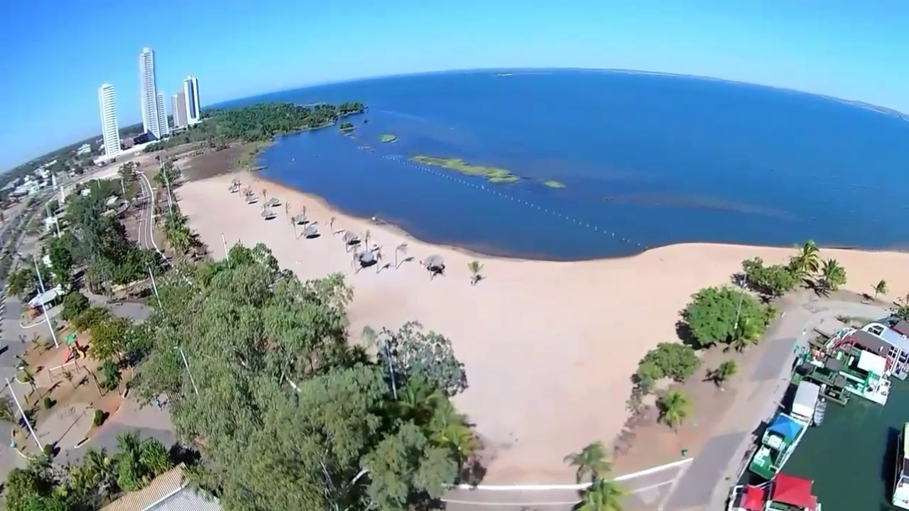
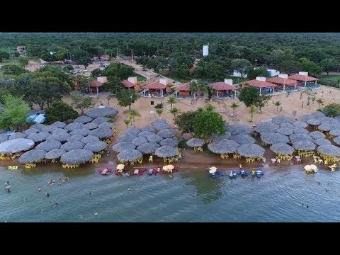
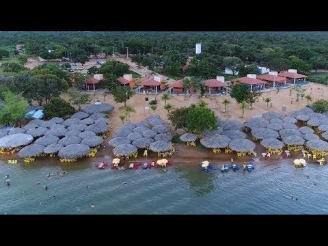
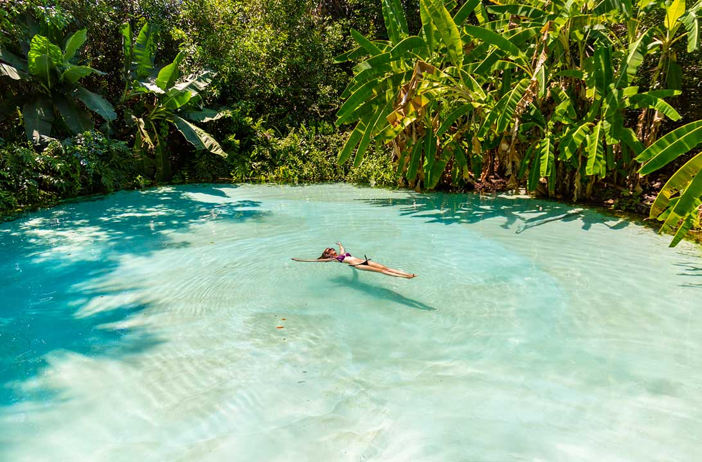
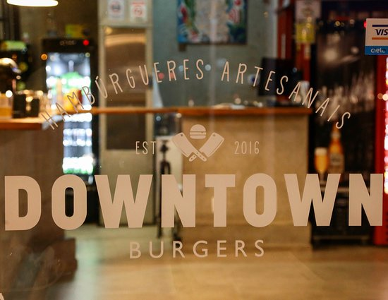
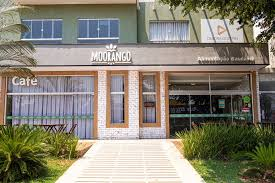

Sobre a Cidade
Imagine uma cidade planejada em meio à exuberante paisagem do cerrado,
com parque urbanos, praças imensas, um imenso lago de um lado a outro.
Isso é Palmas, capital do Tocantins. A cidade foi fundada em 20 de maio de 1989,
logo apos a criação do Tocantins. Palmas é a mais nova das cidades planejadas no Brasil
para serem capitais de estado. Segunda capital mais segura do Brasil (superada
apenas por Natal), é também, a última cidade do século XX completamente planejada,
já que a cidade nasceu e foi projetada desde o início para ser a capital.
Palmas, a Capital do estado de Tocantins, ainda é um canteiro de obras e é
chamada de "capital das oportunidades" e tem atraído milhares de pessoas que,
em busca de trabalho, migram para a nova fronteira econômica do País.
As oportunidades de bons negócios tornaram a cidade um destino para muitos
empresários, que buscam conhecer o potencial para investimentos nesse jovem estado.
Mas é praticamente impossível resistir aos atrativos turísticos, especialmente
àqueles que dizem respeito às águas, já que é uma grande oportunidade para
se refrescar nas altas temperaturas registradas o ano inteiro.
Espaços para Lazer
As praias, da Graciosa, do Prata, do Caju, dos Buritis, das Arnos e a
Ilha Canela são praias permanentes, que contam com infraestrutura e
barracas, onde o turista pode desfrutar de incríveis opções culinárias,
como o tradicional tucunaré frito ou assado; além de apreciar umas das
características mais marcantes da cidade: o pôr do sol incomparável, capaz
de emocionar até os mais durões.Então onde ir em Palmas:
Praia da Graciosa
A Praia, que recebe turistas e visitantes desde julho de 2003, é a mais frequentada
da cidade, principalmente nos finais de semana, e está localizada a nove quilômetros
da Praça dos Girassóis. Sua infraestrutura dispõe de estacionamento, banheiros, telefones,
quadra para a prática de esportes, área para acampamento, serviços de restaurantes e bares
e barracas de palha distribuídas na orla do lago, que protegem os visitantes do calor do sol.

Praia do Prata
Se está passeando por Palmas, a Praia do Prata é parada obrigatória para quem
quer aproveitar um ambiente familiar às margens do lago e se deliciar com a
boa gastronomia tocantinense. A Praia, que recebe turistas e visitantes desde
julho de 2003, é a mais frequentada da cidade, principalmente nos finais de semana,
e está localizada a nove quilômetros da Praça dos Girassóis.
Sua infraestrutura dispõe de estacionamento, banheiros, telefones, quadra
para a prática de esportes, área para acampamento, serviços de restaurantes
e bares e barracas de palha distribuídas na orla do lago, que protegem os
visitantes do calor do sol. O local também é muito utilizado como ponto de
realização de eventos culturais e esportivos de médio porte, sendo uma ótima
opção de descontração e lazer. Nossa dica gastronômica para quem resolver
passar o dia na praia: provar a deliciosa moqueca de peixe e o famoso
tucunaré frito, servidos nos bares e restaurantes do lugar.
Algumas barracas têm acesso à internet e aceitam cartões de diversas bandeiras.
 

Avenida JK
A Avenida Juscelino Kubitschek, ou avenida JK, localiza-se na área central da cidade e
atravessa a capital de leste a oeste, ligando a TO-050 ao lago formado pela UHE Luis
Eduardo Magalhães. Ela é uma das principais avenidas de Palmas, juntamente com a Avenida
Teotônio Segurado, que corta a cidade de norte a sul, e é muito importante para os
palmenses, pois está inserida no cotidiano da população que utilizam a avenida para
trabalhar, realizar comprar ou apenas passear.
A Avenida JK é o principal centro
comercial, institucional e prestador de serviços da cidade e possui um grande fluxo de
pessoas.Devido ao grande fluxo de veículos e à quantidade insuficiente de vagas nos
estacionamentos, a prefeitura adotou o estacionamento rotativo para tentar diminuir o
congestionamento da região.
Parque Cesamar e Casa Suçuapara
Criado em 1998, o Parque Cesamar proporciona à população de Palmas um espaço de
convívio para a melhoria da qualidade de vida. Possui pista para caminhadas,
equipamentos para a prática esportiva e espaços de diversão para crianças e adultos.
Hoje, no local, funciona um museu - a Casa da Cultura - que abriga o acervo
histórico de Palmas como fotografias, documentos e mapas que retratam vários momentos
históricos da capital. A Casa abriga também a Associação dos Amigos do Patrimônio
Cultural de Palmas (AAPCP) e a Academia Palmense de Letras (APL).

Jalapão
Destino já conhecido pelos apaixonados pelo ecoturismo e turismo de aventura.
Localizada no Estado do Tocantins, a região encanta por suas águas abundantes,
chapadões e serras com clima de savana, além da paisagem de cerrado, com direito
a dunas alaranjadas, rios encachoeirados, nascentes e impressionantes formações rochosas.
A preocupação em manter preservada essa incrível riqueza natural é representada pela
presença de vários instrumentos de conservação, como o Parque Estadual do Jalapão,
o Parque Nacional das Nascentes do Rio Parnaíba; a Estação Ecológica da Serra Geral do
Tocantins; a Área de Preservação Ambiental (APA) Serra da Tabatinga; e a
Área de Proteção Ambiental (APA) Jalapão.

Onde Comer
Restaurante Tabu
Restaurante com fartos pratos à la carte, opção em carnes e destaque aos peixes,
espaço simples e familiar.
Downtown Burgers
Burguerbar de opções inventivas e apuradas com petiscos e coquetéis em espaço
acolhedor descolado com sacada.

Moorango
Restaurante contemporâneo de menu apurado com lanches e petiscos entre pratos
da casa incluindo grelhados.


Dolce Bacio Gelato
Sorveteria para refrescar dias quentes com deliciosos gelatos,tortas,brownie e café.
Feira da 304 Sul
A Feira da 304 Sul é uma dos lugares que mais chamam a atenção de quem visita a
cidade de Palmas. Como qualquer feira, ela comercializa frutas, legumes, verduras,
comidas típicas e produtos diversos, mas tem uma característica específica que chama
a atenção: o horário de funcionamento. Ela ocorre todas terças e sextas-feiras,
no período noturno, com as atividades iniciadas a partir das 17h, e também aos sábados
a partir das 7 horas. São várias bancas que atraem pelas cores, cheiros e sabores
regionais.
Casa da Tortas
Especializada em tortas, a casa também oferece sucos e drinques em ambiente boêmio
repleto de objetos antigos.

Onde se Hospedar
Hotel Girassol Plaza
Endereço:101 Norte, Rua NS A, Conj. 2, Lote 4 - Plano Diretor Norte,
Palmas - TO, 77001-006
Telefone: (63) 3212-0202
Hotel Casa Grande
Endereço: Av. Joaquim Teotônio Segurado, 201 - Plano Diretor Sul,
Palmas - TO, 77015-200
Telefone: (63) 3216-8000
Victória Plaza Hotel
Endereço: Av. Juscelino Kubitscheck, 103 - conj 1 lote 11,
Plano Diretor Sul,
Palmas - TO, 77015-012
Telefone: (63) 3219-7800
Hotel Pousada dos Girassóis
Endereço: Quadra 103 Sul, Conjunto 03, Lote 39 B e 39 C Centro,
Palmas - TO, 77015-038
Telefone: (63) 3219-4500